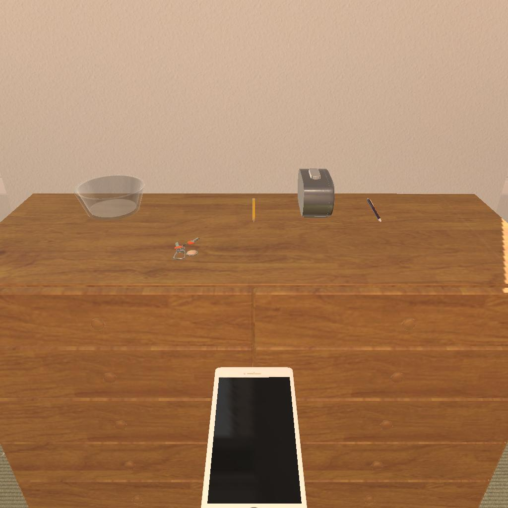

---------------------------------------------------------task: 0---------------------------------------------------------
--------------------------------------------------------------------------------------------------------------------------------------------------------------------
--------------------------------------------------------------------------------------------------------------------------------------------------------------------
Step:--------------------------------------------------------------------------15-------------------------------------------------------------------------------
----------------------------------------
VLM Prompt:
**Task**
Please perform as an embodied AI agent. Our final objective is to look at alarmclock under the desklamp. Below is the plan for completing the task, the current observation, alongside historical data and admissible actions for the next step. Please determine the best action for the next step!
**Plan**
Below is a detailed step-by-step plan to complete the task.
1. Find an alarm clock.
2. Pick up the alarm clock.
3. Find a desk lamp.
4. Turn on the desk lamp.
5. Position the alarm clock under the light of the desk lamp.
6. Look at the alarm clock under the desk lamp.
**Current Observation**
Displayed is an image capturing the current position of the agent.
**History Information**
Displayed are the previous observations with their corresponding actions.
Current State 1:
1. Place: Unspecified (likely a bedroom or similar setting)
2. Step Index in Plan: 1
3. Objects: Desk, desk lamp, sidetable
4. Action: Go to sidetable 1
Current State 2:
1. Place: Bedroom
2. Step Index in Plan: 1
3. Objects: Sidetable, desklamp, cellphone
4. Action: Take cellphone 1 from sidetable 1
Current State 3:
1. Place: Bedroom
2. Step Index in Plan: 2
3. Objects: Desk lamp, side table, cellphone
4. Action: Go to drawer 1
Current State 4:
1. Place: Bedroom
2. Step Index in Plan: 2
3. Objects: Desk lamp, Sidetable
4. Action: Open drawer 1
Current State 5:
1. Place: Bedroom
2. Step Index in Plan: 2
3. Objects: Desk Lamp, Side Table
4. Action: Close drawer 1
Current State 6:
1. Place: Bedroom
2. Step Index in Plan: 1
3. Objects: Drawer 1, Cellphone, Desk Lamp, Side Table
4. Action: Go to drawer 2
Current State 7:
1. Place: Unspecified current location with a desk
2. Step Index in Plan: 2
3. Objects: Alarm clock, desk, various objects, drawer 2
4. Action: Open drawer 2
Current State 8:
1. Place: Desk area
2. Step Index in Plan: 2
3. Objects: Alarm clock, Desk lamp, Drawer 2, Cellphone 1
4. Action: Put cellphone 1 in/on drawer 2
Current State 9:
1. Place: Bedroom
2. Step Index in Plan: 2
3. Objects: Alarm clock, desk, desk lamp
4. Action: Open drawer 2
Current State 10:
1. Place: Desk
2. Step Index in Plan: 2
3. Objects: Alarm clock, desk lamp
4. Action: Close drawer 2
Current State 11:
1. Place: Desk
2. Step Index in Plan: 2
3. Objects: Alarm clock, desk lamp
4. Action: Go to dresser 1
Current State 12:
1. Place: Desk
2. Step Index in Plan: 2
3. Objects: Alarm clock
4. Action: Open drawer 2
Current State 13:
1. Place: Desk
2. Step Index in Plan: 2
3. Objects: Alarm clock, desk lamp
4. Action: Open drawer 2
Current State 14:
1. Place: Desk
2. Step Index in Plan: 3
3. Objects: Desk lamp, dresser 1
4. Action: Go to dresser 1
**Admissible Actions**
(1): go to bed 1
(2): go to sidetable 1
(3): go to drawer 1
(4): go to dresser 1
(5): go to drawer 3
(6): go to drawer 4
(7): go to drawer 5
(8): go to drawer 6
(9): go to drawer 7
(10): go to drawer 8
(11): go to drawer 9
(12): go to drawer 10
(13): go to drawer 11
(14): go to safe 1
(15): go to laundryhamper 1
(16): go to garbagecan 1
(17): open drawer 2
(18): close drawer 2
(19): put cellphone 1 in/on drawer 2
(20): examine cellphone 1
**Analysis Guideline**
1. Analyze the **History Information** and determine our current step in the plan and our current place.
2. List all visible objects related to the task in the current observation.
3. Analyze the objects in the current observation based on the history and the requirements for the current step, and then determine if we can complete the step with the current observation.
4. Analyze and decide on the most appropriate action to take.
5. Summarize the analysis using the following format: "Analysis: [The summarization of the analysis], The Most Appropriate Action: (i which is the integer.): [Selected action]"
**Notes**
1. We must complete each step of the plan in order and cannot skip steps when the previous ones are not finished.
2. For "Go to" actions listed as "go to xxx [n]", interpret this as there are n distinct actions available: "go to xxx 1", "go to xxx 2", ..., "go to xxx n". Select one specific action from these options instead of using "go to xxx [n]".
3. If receptacles such as drawers, cabinets, and so forth are closed in the current observation, we may try to open them.
4. Pay attention to synonyms and ensure clarity in the terms used.
5. If there is no history available, we are at the first step and the current place is "Unknown".
6. The most appropriate action must be in the **Admissible Actions**, and we cannot generate a new action that is not in the **Admissible Actions**.
**Answer**
Please select the most suitable action by following the **Analysis Guideline**, keeping the above **Notes** in mind.
----------------------------------------
----------------------------------------
VLM Response:
Analysis: Based on the History Information, our current step in the plan is step 2, which is to pick up the alarm clock. The current place is at the desk. The visible objects related to the task in the current observation are the desk and the desk lamp. The alarm clock is not visible in the current observation, which means we cannot complete the current step with the current observation. Since the history shows that we have already attempted to interact with drawer 2 without success in finding the alarm clock, we should try to look elsewhere. The most appropriate action would be to continue searching for the alarm clock by opening other drawers that have not been explored yet.
The Most Appropriate Action: (5): go to drawer 3
----------------------------------------
----------------------------------------
>>> Refine VLM Response and Get Pure Action: go to drawer 3
----------------------------------------
-----------------------------------------------------------------
Running time: 23.01550054550171 seconds
Total Money: 0.45314
-----------------------------------------------------------------
-----------------------------------------------------------------
Summarization Prompt:
**Context**
Analysis: Based on the History Information, our current step in the plan is step 2, which is to pick up the alarm clock. The current place is at the desk. The visible objects related to the task in the current observation are the desk and the desk lamp. The alarm clock is not visible in the current observation, which means we cannot complete the current step with the current observation. Since the history shows that we have already attempted to interact with drawer 2 without success in finding the alarm clock, we should try to look elsewhere. The most appropriate action would be to continue searching for the alarm clock by opening other drawers that have not been explored yet.
The Most Appropriate Action: (5): go to drawer 3
**Summary Format**
1. Place: [Specify the current location]
2. Step Index in Plan: [Dispkay the current step number in the plan before taking the current action]
3. Objects: [List the objects relevant to the task]
4. Action: [Describe the most appropriate action without the "(x)" and keep the integer of the object]
Please analyze the **Context** and summarize the analysis using the **Summary Format**.
-----------------------------------------------------------------
-----------------------------------------------------------------
Summarization Response:
1. Place: Desk
2. Step Index in Plan: 2
3. Objects: Desk, Desk Lamp
4. Action: Go to drawer 3
-----------------------------------------------------------------
-----------------------------------------------------------------
Text Observation:You arrive at loc 5. The drawer 3 is closed.
-----------------------------------------------------------------
UNSUCCEED